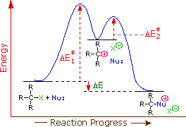
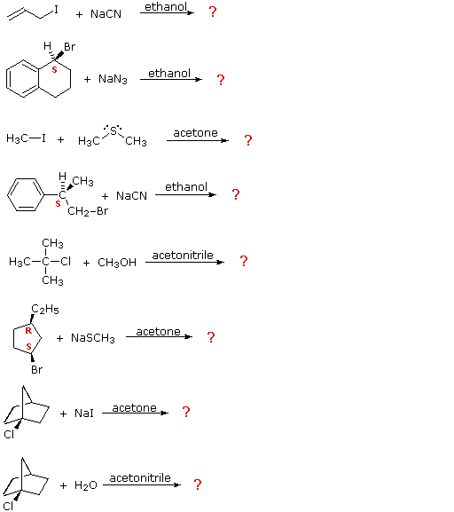

As described in the previous section, a majority of the reactions thus far described appear to proceed by a common single-step mechanism. This mechanism is referred to as the SN2 mechanism, where S stands for Substitution, N stands for Nucleophilic and 2 stands for bimolecular. Other features of the SN2 mechanism are inversion at the alpha-carbon, increased reactivity with increasing nucleophilicity of the nucleophilic reagent and steric hindrance to rear-side bonding, especially in tertiary and neopentyl halides. Although reaction 3 exhibits second order kinetics, it is an elimination reaction and must therefore proceed by a very different mechanism, which will be described later.
To see an animated model of the SN2 reaction
Reaction 7, shown at the end of the previous section, is clearly different from the other cases we have examined. It not only shows first order kinetics, but the chiral 3º-alkyl bromide reactant undergoes substitution by the modest nucleophile water with extensive racemization. In all of these features this reaction fails to meet the characteristics of the SN2 mechanism. A similar example is found in the hydrolysis of tert-butyl chloride, shown below. Note that the initial substitution product in this reaction is actually a hydronium ion, which rapidly transfers a proton to the chloride anion. This second acid-base proton transfer is often omitted in writing the overall equation, as in the case of reaction 7 above.
Although the hydrolysis of tert-butyl chloride, as shown above, might be interpreted as an SN2 reaction in which the high and constant concentration of solvent water does not show up in the rate equation, there is good evidence this is not the case. First, the equivalent hydrolysis of ethyl bromide is over a thousand times slower, whereas authentic SN2 reactions clearly show a large rate increase for 1º-alkyl halides. Second, a modest increase of hydroxide anion concentration has no effect on the rate of hydrolysis of tert-butyl chloride, despite the much greater nucleophilicity of hydroxide anion compared with water. The first order kinetics of these reactions suggests a two-step mechanism in which the rate-determining step consists of the ionization of the alkyl halide, as shown in the diagram on the right.

Consequently, we expect that 3º-alkyl halides will be more reactive than their 2º and 1º-counterparts in reactions that follow an SN1 mechanism. This is opposite to the reactivity order observed for the SN2 mechanism. Allylic and benzylic halides are exceptionally reactive by either mechanism. Fourth, in order to facilitate the charge separation of an ionization reaction, as required by the first step, a good ionizing solvent will be needed. Two solvent characteristics will be particularly important in this respect. The first is the ability of solvent molecules to orient themselves between ions so as to attenuate the electrostatic force one ion exerts on the other. This characteristic is related to the dielectric constant, ε, of the solvent. Solvents having high dielectric constants, such as water (ε=81), formic acid (ε=58), dimethyl sulfoxide (ε=45) & acetonitrile (ε=39) are generally considered better ionizing solvents than are some common organic solvents such as ethanol (ε=25), acetone (ε=21), methylene chloride (ε=9) & ether (ε=4). The second factor is solvation, which refers to the solvent's ability to stabilize ions by encasing them in a sheath of weakly bonded solvent molecules. Anions are solvated by hydrogen-bonding solvents, as noted earlier. Cations are often best solvated by nucleophilic sites on a solvent molecule (e.g. oxygen & nitrogen atoms), but in the case of carbocations these nucleophiles may form strong covalent bonds to carbon, thus converting the intermediate to a substitution product. This is what happens in the hydrolysis reactions described above. Fifth, the stereospecificity of these reactions may vary. The positively-charged carbon atom of a carbocation has a trigonal (flat) configuration (it prefers to be sp2 hybridized), and can bond to a nucleophile equally well from either face. If the intermediate from a chiral alkyl halide survives long enough to encounter a random environment, the products are expected to be racemic (a 50:50 mixture of enantiomers). On the other hand, if the departing halide anion temporarily blocks the front side, or if a nucleophile is oriented selectively at one or the other face, then the substitution might occur with predominant inversion or even retention of configuration.
To see an animated model of the SN1 ionization step in which a chiral alkyl halide generates a trigonal carbocation
If you understand the factors and principles that influence the course of nucleophilic substitution reactions, try your hand at the following exercises. For each case the possibility of a substitution versus no reaction must be considered. If a substitution is predicted will it take place by an SN1 or an SN2 mechanism? If chiral centers are present will the configuration change?

Heterolytic cleavage of the carbon-halogen bond of alkyl halides may be facilitated by the presence of certain metal cations. In the extreme, carbocations may be generated as shown in the following equation, where R is alkyl or hydrogen, and M = Al (n=3) or Fe (n=3) or Sn (n=4) or Zn (n=2).
R3C-X + MXn (reactivity = Al > Fe > Sn > Zn) ——> R3C(+) + MXn-X(–)
Although this technique is useful for generating carbocation intermediates in hydrocarbon solvents, the metal halide reactants are deactivated in protic solvents such as water and alcohol, rendering these reactants relatively useless for inducing SN1 reactions. There is, however, a related halophilic reactant that accomplishes this. This compound is silver nitrate, and in aqueous or alcoholic solution it promotes ionization of the alkyl halide and the formation of SN1 products. When silver nitrate is used with 1º or 2º-alkyl halides, rearrangement may occur before the product formation stage. For example:
A more extensive discussion of the factors that influence carbocation stability may be accessed by Clicking Here.
For many combinations of alkyl halides and nucleophiles, elimination reactions may compete with substitution, or even be the predominant reaction path. If we hope to understand why one or the other mode of reaction is preferred in a given case, we must study elimination reactions with the same care as we studied substitution.
This page is the property of The Edvibe Team. Comments, questions and errors should be sent to contact@edvibe.co.ke. These pages are provided to the IOCD to assist in capacity building in chemical education. 05/05/2013